Road design
A road design lives on a terrain snapshot of the project and walks through seven stages. Each stage saves its own data, every geometric value is checked against the design standard, and the last stage produces the drawing sheets, the AutoCAD files and the quantities.
Starting a road design
- In the terrain workspace open an alignment and press Open in Road design ▸. The design is seeded with that alignment on the latest TIN run.
- Or use ＋ New design in the module switcher and pick Road design. A design without a seed alignment starts with an empty IP table.
- The design is pinned to a terrain snapshot. When a newer TIN run exists the Alignment stage shows Newer terrain available with a Rebase button; nothing changes until you press it.
The road workspace
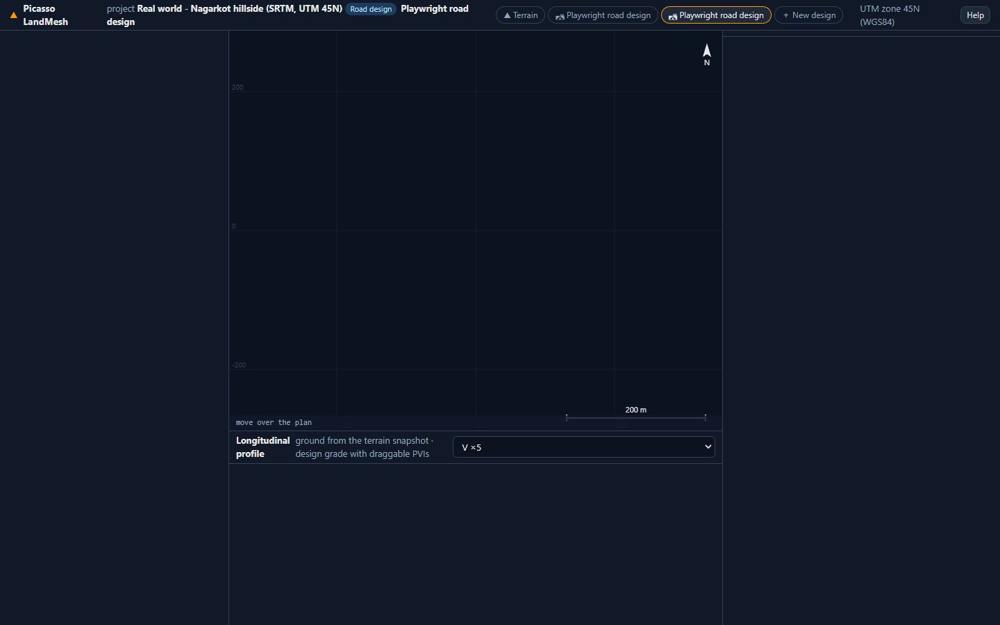
| Area | What you do there |
|---|---|
| Stage panel | The seven stages with their status (done, todo, unsaved). Click a stage to open its cards; tables in the cards edit the same data as the drag handles on the plan and profile. |
| Plan | Project coordinates, north up. Layer chips switch the terrain extent, contours, constraint lines, corridor daylight lines, structures and the alignment; Fit and Fit alignment frame the view. Move the mouse to read chainage and offset in the status bar; click to show the cross-section there. On the Alignment stage the IP squares can be dragged. |
| Longitudinal profile | Ground line from the terrain snapshot and the design grade with draggable PVIs. Choose the vertical exaggeration (V ×2 … ×20). Hovering shows the cursor on the plan. |
| Cross-section | Ground and design at the chainage shown at the top; step with ◀ ▶, choose the step (every 20 m) and the half-width. |
1 · Alignment
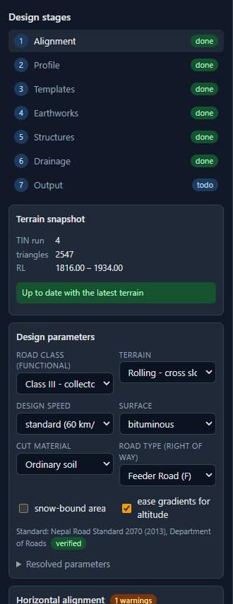
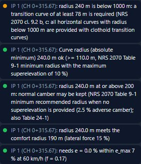
- Design parameters: road class, terrain type, design speed and surface. They select the rows of the design standard used by all checks and by the default typical section. Save them before you start.
- Horizontal alignment: the IP table holds X, Y, the curve radius R and the transition (spiral) length Ls; 0 means no curve or no transition. Drag the IP squares on the plan or type the values. The plan previews the geometry while you edit; Save alignment stores it, Revert drops the edits.
- The curve table lists, per IP, the deflection, radius, transition, tangent length T, curve length Lc, external E, the chainages of TS/BC, SC, CS and ST/EC, and the superelevation rate. Superelevation development shows where the cross slope rotates.
- Checks: minimum radius, whether a transition is required and long enough, superelevation demand against emax, and geometry problems such as overlapping curves.
When the alignment changes
Moving an IP changes the ground under the road, so the grade line and the cross-sections have to follow. The card When the alignment changes decides what happens each time you save the alignment:
- Stretch the grade line (default): every PVI keeps its relative position along the road and its cut or fill depth against the ground, so the design intent survives the move. Curve lengths shrink with a shorter road.
- Re-fit the grade line to the ground: the grade line is generated again from the new ground at the previous PVI spacing; manual PVI edits are lost.
- Trim / extend: PVIs stay where they are; the grade line is clipped or extended along its end grades to the new start and end chainage.
- Keep: nothing moves; the Profile stage flags the grade line as out of date.
Tick rebuild the corridor and cross-sections at once to run the corridor with its last settings straight after the save, so the cross-section panel, quantities and daylight lines update in the same step. While you drag an IP, the longitudinal profile already shows the ground under the new centre line.
2 · Profile
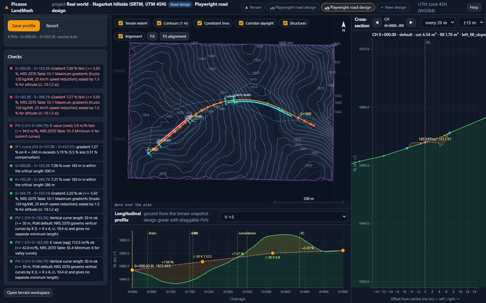
- Fit to ground creates a first grade line that follows the terrain, with a PVI every PVI spacing metres and vertical curves of the standard's minimum length.
- Drag PVIs in the profile or edit chainage, level and curve length L in the table. Grades between PVIs and the K value of every curve are written on the profile.
- Save profile stores it; dragging a PVI saves automatically. Checks: maximum and exceptional gradient with the length allowed at the exceptional gradient, minimum gradient for drainage, minimum K for crest and sag curves and minimum curve length.
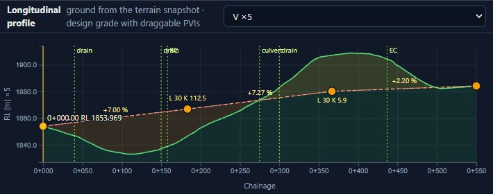
3 · Templates
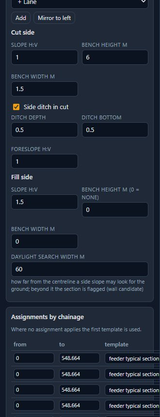
- A template is the typical cross-section: components from the centre line outwards on each side (lane, shoulder, verge, kerb …) with width and cross slope, and whether the component rotates with the superelevation. Mirror copies one side to the other.
- Cut side: slope (h:v), bench height and width, and an optional side ditch (foreslope, depth, bottom width). Fill side: slope and benches. Daylight search width limits how far the slope looks for the ground; a section that does not catch the ground is flagged.
- Assignments by chainage apply a template between two chainages; the first template is the default elsewhere. Add range and edit the from / to values.
- Superelevation: enable or disable, emax, side friction, normal camber, the relative gradient of the runoff and the rotated width. Defaults come from the standard for the design parameters.
4 · Earthworks
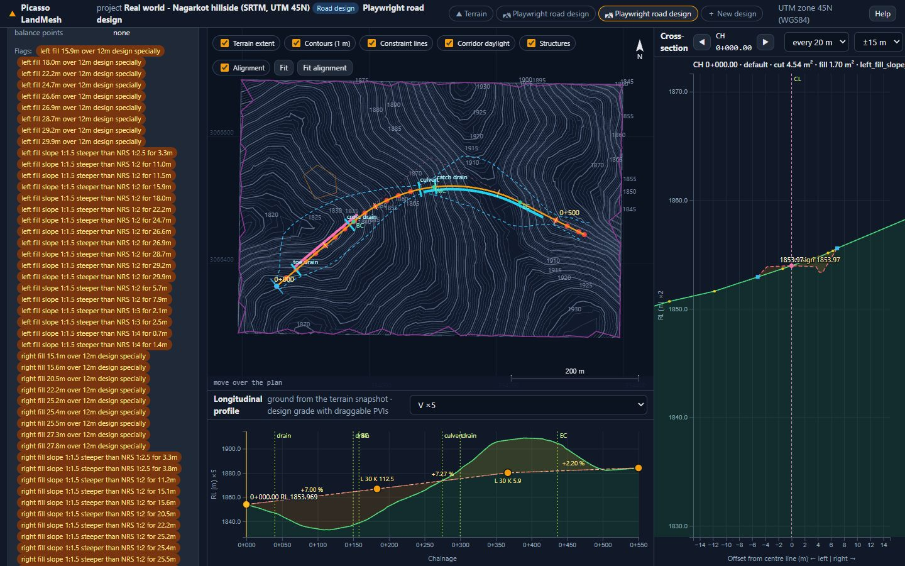
- Set the section interval, the cut factor (shrinkage of cut placed as fill) and the fill factor (compaction demand); tick prismoidal to compute volumes from mid-sections as well.
- Build corridor sweeps the templates along the alignment: at every station the ground line is read from the terrain snapshot, the design level from the profile, the cross slopes from the superelevation, and the slopes are daylighted with ditches and benches. Cut and fill areas are exact for the sampled ground.
- Quantities show the number of sections, cut, fill, net, the maximum surplus and deficit and the balance points. The mass-haul diagram is clickable: click to jump to that chainage. Volumes CSV downloads the table.
5 · Structures and 6 · Drainage
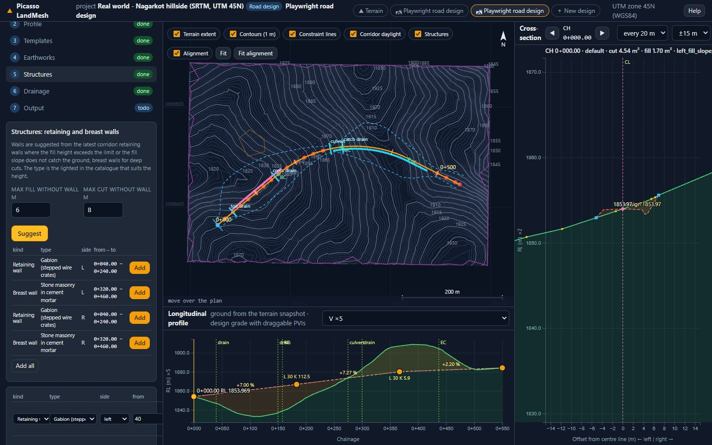
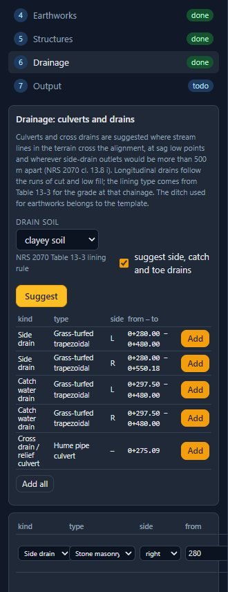
Both stages edit the same list of structures; the Structures stage shows the walls and the Drainage stage the culverts and drains. Each row carries a kind, a type from the catalogue, the side, the chainage range and the parameters that type needs. Suggest proposes records from the latest corridor and the terrain, Add creates one by hand, Save structures stores them. Structures are drawn on the plan, on the cross-sections and exported to DXF and Excel.
Wall kinds and types
Kinds: retaining wall on the fill side, breast wall on the cut side, toe wall at the foot of a fill and catch wall at the foot of a cut for falling debris.
| Type | Usual height | Where it suits |
|---|---|---|
| Dry stone masonry | to 3 m | Cheap, flexible, free draining; low cut and fill slopes. |
| Stone masonry in cement mortar | to 6 m | The usual hill-road gravity wall. Needs weep holes and a granular back drain. |
| Gabion (stepped wire crates) | to 8 m | 1 x 1 m crates stepped one box per course; tolerates settlement, drains freely, good on weak foundations. |
| Mass concrete gravity | to 6 m | Where stone is scarce or the wall is submerged. |
| RCC cantilever | 3 to 8 m | Stem on a base slab: far less material above about 4 m, but needs formwork and steel. |
| RCC counterfort | 7 to 12 m | High walls where a cantilever becomes uneconomic. |
| Concrete crib | to 6 m | Precast units filled with granular material; quick, tolerates movement. |
| Reinforced soil (geogrid) | 3 to 12 m | Compacted fill reinforced with geogrid behind a gabion or block facing; economic for long high fills. |
Suggest picks the lightest type whose usual height covers the wall, so a 2 m wall comes back as dry stone and a 7 m wall as gabion. Changing the type changes the section, the material and the quantities. A wall taller than its type normally carries is flagged in the checks.
Drain kinds and types
Kinds: side drain along cuts, catch water drain behind the top of a cut, toe drain along low fills, chute or cascade down a slope, subsurface drain, plus the cross drainage: culvert and cross drain.
| Type | Shape and lining | Gradient it suits |
|---|---|---|
| Earthen trapezoidal | Trapezoid, unlined | Below 1 % in sandy soil, below 2 % in clayey soil |
| Grass-turfed trapezoidal | Trapezoid, turf | Up to 3 % |
| Stone-pitched or masonry trapezoidal | Trapezoid, rip-rap or masonry | 3 to 5 % |
| Masonry or RCC rectangular | Rectangle, masonry or concrete | 3 to 5 %, where space at the toe is tight |
| Concrete V-shape, dished | V or saucer, concrete | Shoulder, median and accesses |
| Stepped masonry (cascade) | Steps, masonry | Above 5 % |
| Perforated pipe in filter | 150 to 200 mm pipe in a filter trench | Subsurface drainage |
Culvert types are hume pipe, RCC box, RCC slab on masonry abutments, masonry arch, causeway and vented causeway, with a span and a number of cells. A total span over 6 m is a bridge under NRS 2070 cl. 17.1 a and is reported as an error.
Quantities and checks
Every stored structure produces material quantities from its type and size: masonry, gabion, concrete and steel for walls, excavation and lining for drains, pipe length for culverts. The stage shows the totals and the Excel export has a Structure quantities sheet with one row per structure and a total line. A structure on both sides counts twice.
The checks card lists what the standard says about the records: culvert span against the bridge limit, drain lining and gradient, the 5 m catch-drain offset, the 500 m outlet spacing and each wall against the height its type normally carries.
7 · Output: drawings and exports
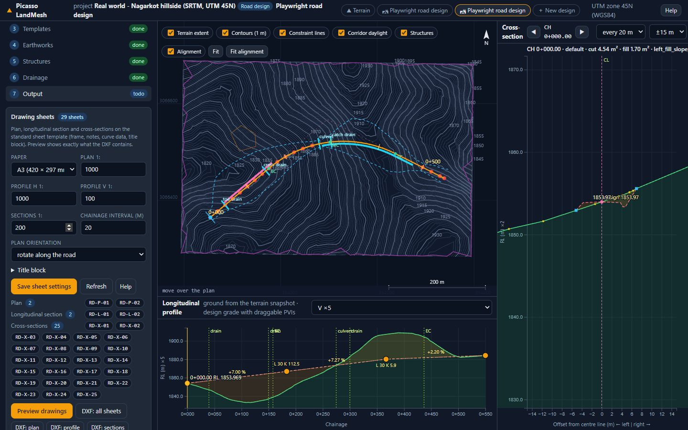
Drawing sheets and preview
- Sheet settings: paper (A4 to A0, landscape), plan scale, profile horizontal and vertical scales, cross-section scale, chainage interval and the plan orientation (rotated along the road or north up). Open Title block to fill organisation, project, road, drawing number prefix, drawn / checked / approved, date and revision. Save sheet settings re-lays the sheets.
- The sheet list shows how many Plan, Longitudinal section and Cross-section sheets the design needs at those settings. Cross-section sheets need a built corridor; the profile needs ground under the alignment or a grade line.
- Click a sheet number or Preview drawings to open the viewer. The list on the left jumps between sheets, ‹ › or the arrow keys step, the wheel zooms, dragging pans, Fit resets. What you see is exactly what the DXF contains.
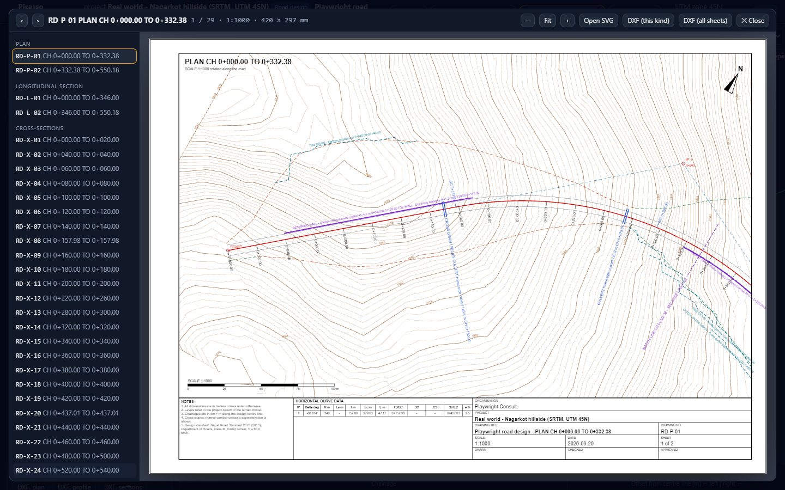
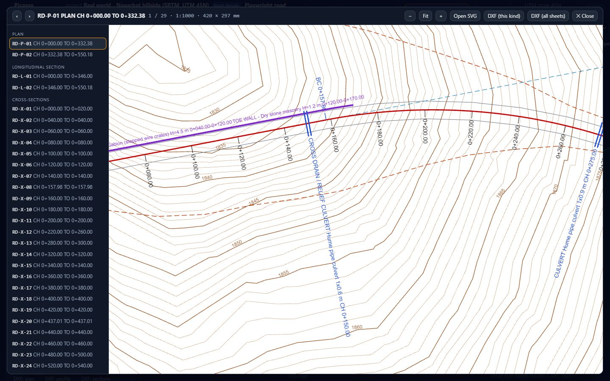
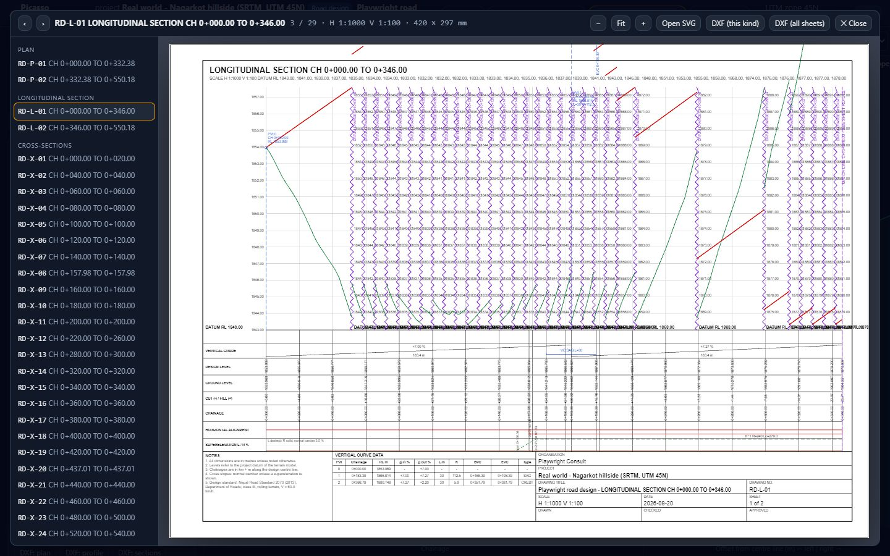
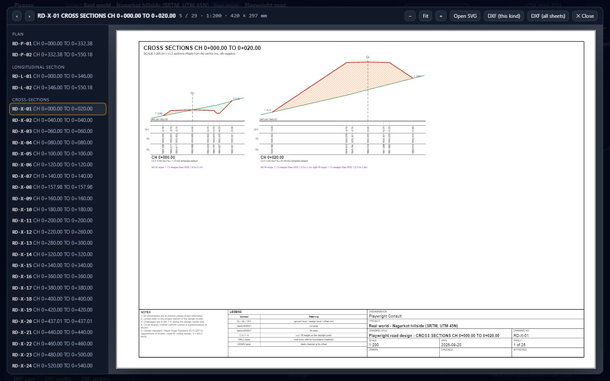
AutoCAD (DXF)
| Button | File |
|---|---|
| DXF: all sheets | Every sheet, drawn in millimetres. Model space holds the sheets side by side (one row per kind) and each sheet also has its own paper-space layout at 1:1, so you can plot straight from the Layout tabs. |
| DXF: plan / profile / sections | Only the sheets of that kind. |
| Model DXF (project coordinates) | The design in metres in the project coordinate system: centreline with true arcs on H_ALIGN, IPs and tangents, chainage ticks, curve key points, the 3-D design centreline, formation and daylight lines, one 3-D polyline per cross-section and the structures. Overlay it on the terrain DXF from the Export tab. |
Layers are named for their content (CONTOUR, H_ALIGN, DESIGN, GROUND, CUT_HATCH …) with colours and lineweights set on the layer, so a plot style of your own can override them.
Excel workbook and CSV
Excel workbook (.xlsx) writes one file with these sheets:
| Sheet | Contents |
|---|---|
| Summary | Project, design, standard and its status, design parameters, lengths, totals, number of failing checks. |
| Horizontal, Superelevation | IP and curve table with all chainages and quantities; cross slopes along the road and per curve. |
| Vertical, Levels | PVI table with grades, K, BVC / EVC and high / low points; ground level, design level, depth, grade and cross slopes at every station. |
| Sections, Section points | Per section: template, areas, side kinds, hinge and catch offsets, heights, flags; every design and ground point of every section. |
| Volumes, Mass haul | Volumes between stations with live formulas: change the cut or fill factor cells at the top and the adjusted volumes, net and cumulative recalculate. |
| Structures, Checks, Standard | The structures table; every check with result, limit and source; the standard's parameters with their status. |
The CSV buttons give the IP / curve table, the PVI table and the volumes as plain text; Design JSON saves the whole design for archiving or re-import by the administrator.
Reading the drawings
- Drawing numbers:
RD-P-01plan sheets,RD-L-01longitudinal sections,RD-X-01cross-sections; the prefix comes from the title block settings. The title block shows the scale, the date and sheet n of N. - Match lines mark where the road continues on the neighbouring sheet, with its number.
- Datum changes: on steep roads a longitudinal section sheet is divided by break lines; each part has its own datum written below it, as in hand-drawn sections. Choose a larger vertical scale (for example V 1:200) for fewer breaks.
- Cross-sections are drawn at the sheet scale; a section too large for the paper is drawn smaller and says so under its title. Bands give the offset, the design level and the ground level at the annotated points; C and F at the daylight points are the cut and fill heights.
- The notes on every sheet state the design standard and warn when its values are still placeholders (see Standards & checks).
Mouse and keyboard
| Where | Action |
|---|---|
| Plan | Drag to pan, wheel to zoom, click to show the cross-section at that chainage, drag an IP square (Alignment stage) to move it. |
| Profile | Drag a PVI to move it (saves on release); hover to read chainage and levels. |
| Cross-section | ◀ ▶ step through the stations; change the step and the half-width in the header. |
| Sheet viewer | ← → previous / next sheet, wheel zooms, drag pans, double-click fits, Esc closes. |
| Everywhere | Unsaved changes are flagged in the top bar and on the stage; the browser warns before you leave with unsaved edits. |